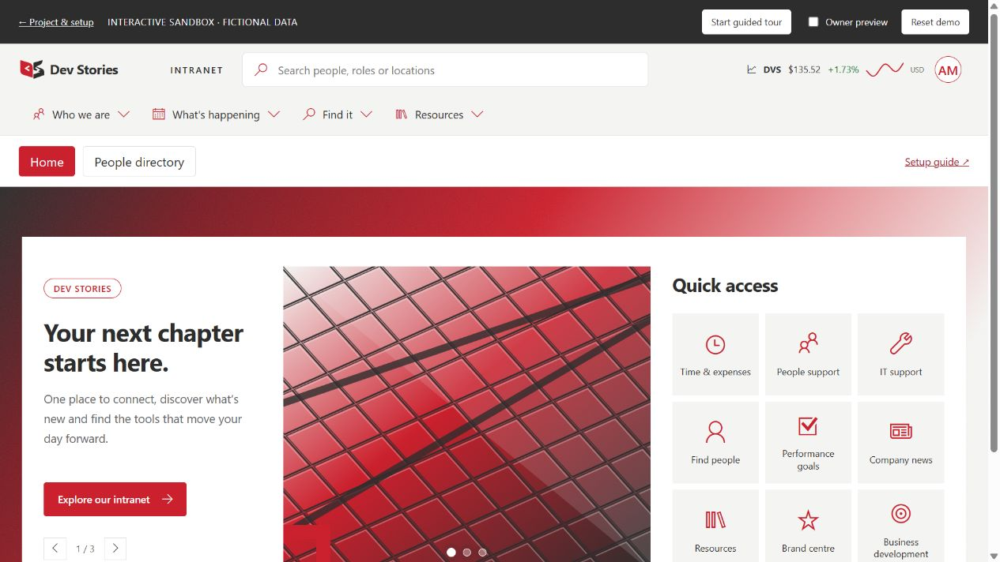

One branded shell
Logo, profile links, four-level navigation and a stock slide-out. Header selectors and menu links have named owner settings.
PERSONAL PROJECT · COMPLETE INTRANET EXPERIENCE
A branded SharePoint intranet with modular SPFx projects, owner configuration and a connected people-search experience.
11-step guided tour · fictional profiles · sample market data · no tenant sign-in

EXPLORE THE WORKING DEMO ↗Logo, profile links, four-level navigation and a stock slide-out. Header selectors and menu links have named owner settings.
Configure carousel slides, CTA links, images and quick access without editing source. A packaged image frames the content.
Searchable filter dropdowns, stable selections, Apply/Clear and photo-led cards with a right-hand profile panel.
HANDS-ON WALKTHROUGH
Launch the demo, start the guided tour, switch to Owner preview, edit a slide, search twelve fictional colleagues, apply a filter and open a people or stock panel.
The demo imports the production React components. PnP queries, Graph, permissions and persistence are simulated. Edits last until refresh.
HOW THE PIECES CONNECT
Site settings and page properties drive presentation. Server permissions and security trimming remain the authorization boundary.
BUILD, CONFIGURE & OPERATE
Reviewed against this repository's pinned versions on 24 October 2026. Start with prerequisites, then follow deployment order.
This guide describes the source published with the portfolio, not a tenant provisioning service. Replace example paths with your own tenant/site. The public tour uses fictional people and deterministic stock values; it never signs in or calls Microsoft 365. GitHub publication does not deploy SharePoint packages or approve permissions.
| Component | Folder | Package version | Purpose |
| Company header, profile menu, stock, cascading navigation | projects/m365-extensions | 1.4.2.0 | Application Customizer with modules and owner settings |
| Home carousel | webparts/carousel | 1.0.1.0 | Static page properties, inline editor, image frame and quick links |
| People profile cards | projects/m365-profile-cards | 1.5.1.0 | PnP extensibility library, Graph profiles/photos/presence, right slide-out |
| Search filters | projects/m365-search-filters | 1.0.6.0 | Searchable popup options, Apply/Clear and selected chips |
| Search verticals | projects/m365-search-verticals | 1.0.0.0 | Configurable tabs and PnP dynamic-data source |
| Page Column Controller | projects/m365-column-splitter | 2.0.1.0 | Groups existing web parts by container name and percentage |
| Shared brand tokens | projects/m365-search-brand | 1.0.0 | Local package consumed by sibling projects; no SPPKG |
The validated integration target is PnP Modern Search 4.25.0, SPFx 1.23.0, React 17.0.1, TypeScript 5.8.3, Heft 1.3.3 and Node 22.23.3. PnPjs is 4.22.0 where used. These are pinned project versions, not a recommendation to upgrade unrelated tenants to whatever is newest. Keep sibling folders together because file dependencies resolve relatively.
The header's native Microsoft suite-bar adapter and the column controller's page rearrangement depend on Microsoft DOM structure. They are not supported Microsoft customization APIs. The supported SPFx Top placeholder hosts the cascading menu. Organization branding is configured separately through Microsoft 365 settings. A fully flash-free first frame before SPFx loads cannot be guaranteed.
Clone the repository and keep projects/ and webparts/ together. Each project is independently buildable. The shared brand package has no separate runtime deployment.
cd projects/m365-profile-cards
npm ci
npm run typecheck
npm test
npm run build
npm run packageRepeat for m365-search-filters, m365-search-verticals and m365-extensions. For m365-column-splitter use npm ci --legacy-peer-deps, then its typecheck/test/build/package scripts. For the carousel run the same commands in webparts/carousel. Output is each project's sharepoint/solution/*.sppkg. Use committed package-lock.json files and the supported Node line. Do not put node_modules or build intermediates into source control.
There are two separate paths. SharePoint Search discovers matching people and provides refiner values. Microsoft Graph hydrates a selected person's profile, photo and current presence. The UserProfileLinks list only drives account-menu links; it is not the employee database.
Have your directory administrator maintain the authoritative user record in Microsoft Entra ID. For synchronized accounts, change attributes in the authoritative upstream directory when appropriate. In Entra admin center, use Users → All users → select user → Properties to review job/contact information according to your permissions. Changes do not necessarily reach every Microsoft 365 service or the SharePoint search index immediately.
| Visible detail | Graph field/source | Setup note |
| Name | displayName | Human-readable name; never use it as an identity key |
| Role | jobTitle | Empty values display a fallback |
| Department | department | Keep department naming consistent for filtering |
| Company | companyName | Optional organization label |
| Work email | mail, fallback userPrincipalName | Demo addresses end in example.test |
| Work telephone | businessPhones | Array; displayed numbers remain clickable |
| Mobile | mobilePhone | Optional; follow your organization's visibility policy |
| Office | officeLocation | Office label, separate from city/country |
| Location/address | streetAddress, city, state, postalCode, country | Only values populated in the directory appear |
| Portrait | Graph user photo | Missing/inaccessible images use initials |
| Availability | Graph presence | Live state, not an indexed search filter |
The provider selects these fields explicitly. Additional custom attributes, manager trees, skills, expertise or organizational charts are not automatically implemented; add the Graph projection, model and display rows deliberately if needed. Do not promise fields the tenant has not populated.
Use a stable Entra object ID, UPN or SharePoint membership claim in AccountName. The normalizer strips the membership prefix. A display name, blank identity or arbitrary profile URL is not a valid Graph user key.
The profile package requests delegated User.Read.All, ProfilePhoto.Read.All and Presence.Read.All. Review these in SharePoint Admin Center → Advanced → API access with an appropriate administrator. Approval is organization-specific and is not performed by the GitHub demo. It is not an app-only directory export and no client secret belongs in this code.
The production provider uses the signed-in SPFx service scope. Profile and photo results are cached in memory for about 60 seconds, bounded to 100 entries. Presence has its own refresh behavior. The public portfolio swaps in a synthetic provider with no Microsoft Graph connection. A 401/403 indicates an access problem; unknown presence is not evidence that someone is offline. Respect your organization's policy on exposing mobile/address data.
Create or edit a modern page such as /sites/intranet/SitePages/Home.aspx. Add Dev Stories Carousel in a one-column or full-width area supported by the site. Remove unused empty sidebars only after checking their contents.
In page edit mode, site owners see the carousel's Edit control. Manage Slides (up to 12), Quick access (up to 12), then Playback. Set slide label, heading, description, image URL and alt description, button text and destination. Reorder with arrows. Supply a Background image URL to replace the packaged Dev Stories backdrop; blank uses the bundled image frame around the white panel.
Autoplay defaults off; if enabled choose 5–30 seconds. Hover/focus and pause controls stop rotation, and reduced-motion preferences are respected. Save changes in the editor, then publish the SharePoint page. Cancel discards the draft. Sample quick links are placeholders until you enter real destinations. Published readers cannot see the carousel editor.
Create a list named UserProfileLinks on the same site. Use the exact internal field names below; renaming a display label after creation does not necessarily change its internal name.
| Field | Type | Example |
| Title | Single line of text | View intranet profile |
| Url | Hyperlink | Your profile/help page URL |
| GroupByText | Single line of text | Get help, or blank |
Blank GroupByText values render direct links. Repeated nonblank groups render one expandable group containing their links, in item ID order. Populate examples such as Profile, People directory and three Get help links. Give intended readers Read access to the list. Broken/unsafe URLs are omitted.
Company logo and Microsoft suite theme are organization settings, separate from the custom menu. The extension appends INTRANET beside the company logo and mounts the custom stock/profile controls in the isolated adapter. Menu links under the suite bar are configured through the right-side Edit button. Fresh installs start empty; owners may load sample links, then replace URLs before saving. Up to four levels and 150 links are supported.
Owner access is not a hardcoded group name. The extension checks Manage Web plus Manage Permissions and repeats the check before settings writes. The DevStoriesExtensionSettings list stores NavigationConfig, MenuConfig and StockConfig JSON in a Configuration multiline field. The owner migration sets unique list permissions; qualifying owner assignments retain control while non-owner write assignments are reduced to Read. Inspect the resulting ACLs and test with a real member account before production rollout. Do not manually make this list writable to members.
The profile-menu gear opens Navigation configuration. Named headings explain the Microsoft bar, brand label, native site header, app rail and hub row. Defaults include #O365_NavHeader, #O365_HeaderRightRegion, #O365_MainLink_Me, #CenterRegion, #O365_SuiteBranding_container, #O365_MainLink_TenantLogo_container, #spSiteHeader, #sp-appBar and .ms-HubNav.
Use F12 → element picker (Ctrl+Shift+C) to select the real element. Prefer a stable #id over a generated class; otherwise use a unique .class. Test targets before Save. The hub row may not exist at mobile widths. If Microsoft changes nesting rather than names, a developer may need to repair the adapter. If the menu cannot mount, an owner can repair NavigationConfig directly in the settings list. Keep a copy first. The extension property disableSuiteIntegration=true is the rollback switch for the suite adapter. Public selector configuration is cached per site to apply earlier on refresh; no profile records or secrets are stored in that cache.
Select the ticker to open the stock slide-out. Owners see Configure stock API. The IBM reference feed is a public daily demo, subject to provider limits; it is not a real-time company feed. The portfolio's DVS chart is entirely fictional and makes no API request.
For your own company choose Company API/proxy, then enter company name, symbol, ISO currency, public HTTPS proxy URL and source/frequency label. Test & save validates the symbol, numeric values and dated history before persisting. The endpoint must permit CORS and return the normalized shape below. Put provider-specific mapping, private keys and authentication on your server, not in the browser or settings list.
{"quote":{"symbol":"COMPANY","price":123.45,"change":1.23,"percent":1.01,"date":"2026-10-20"},"history":[{"date":"2026-10-19","close":122.22},{"date":"2026-10-20","close":123.45}]}The graph and ticker reuse the normalized data. Failed validation leaves the active configuration unchanged. The source/frequency label should state any delay. The UI is informational and does not execute stock transactions.
Add M365 Search Verticals, PnP Search Results and PnP Search Filters to a modern page. Use SharePoint Search as the Results data source and the Local People Results source appropriate to the PnP configuration. Select at minimum AccountName; typical fields include PreferredName, WorkEmail, JobTitle, WorkPhone, Company, UserName and Path.
Connect the query to your search box, or use Page environment → Query string → Query parameters → k with default *. With the custom verticals, the validated query template is {searchTerms} {verticals.value}. Configure each vertical value as a deliberate query restriction; a tab label alone does not create a data source. Connect Results to the custom vertical source property pnpSearchVerticalsWebPart. Ensure all Results instances have explicit connections and visibility rules.
Upload projects/m365-profile-cards/templates/profile-cards.html to Site Assets. In Results enable extensibility library e425e0ca-e11c-45c6-80b2-94c5e6b035ae, keep the built-in library enabled, choose Custom layout and enter the external template URL. The template emits m365-profile-details with data-user-id from AccountName; React renders the card and slide-out. Enable paging, then publish.
The search index and Graph can temporarily disagree after a profile edit. Confirm the raw search result AccountName and refiner values before treating a missing result as a React defect. Account visibility and security trimming remain server responsibilities.
Enable filter library 9547b485-2a8a-43e9-88a4-9aa8e121d1d2 on the Search Filters web part itself. Choose M365 Soft filter panel (or use templates/soft-filters.html in Site Assets) and M365 Soft checkbox options for supported checkbox refiners. Connect Filters to the intended Results instance, and enable the reciprocal Results → Filters connection.
Configure actual refinable managed properties for Job title, Department, Company or Office. These are display labels, not guaranteed schema property names. A Graph field being visible does not make it searchable/refinable. Inspect your tenant schema, crawled-property mappings and returned refiners; use an administrator for any schema/reindex work. Use OR within one field and AND across fields for the normal directory setup. Presence is not a search refiner.
The dropdown contains option search, a scroll area sized for roughly ten rows and compact Apply/Clear buttons. Selection order remains stable. Checkbox changes are draft until Apply. Clear operates on applied filters. Removing a selected chip updates results immediately through the PnP integration. Test selection, apply, clear, chip removal, empty results, paging, query changes and browser back/forward. The optional clear-on-vertical-change flag is off in the validated site because PnP left stale refiner UI with that combination; verify the behavior in your environment.
For a supported native layout, prefer normal SharePoint sections. The optional M365 Page Column Controller rearranges existing web-part DOM nodes; use it only after testing with your parts and native connections.
In Manage columns select actual web-part instances and enter container name, width, column order and stack order. Two parts named Filter stack in one container. Filter = 20% and Results = 80% totals 100% per unique container; the repeated Filter rows do not each consume another 20%. Names and widths are configurable, not built-in presets. Pick a visibility target and button labels. Validate narrow screens and Restore original layout. Edit mode restores native positions. Class fallbacks CanvasSection and ControlZone are configurable but cannot guarantee compatibility with future Microsoft markup.
| Symptom | Check |
| Old UI after uploading | Catalog Deploy completed, site app upgraded, loaded asset version/hash, normal refresh |
| Blank cards or unknown custom element | Library installed, Results library GUID enabled, template URL, AccountName identity |
| Profile 401/403 | Delegated Graph approvals and signed-in user/tenant access |
| Person is searchable but details missing | Search identity versus Graph record, field projection, empty attributes |
| Updated department not in dropdown | Authoritative profile data, search indexing delay, refinable managed-property mapping |
| No portrait | Missing/inaccessible photo; initials are expected |
| Presence unavailable | Scope, unsupported account, throttling; do not label it offline automatically |
| Filter values show but results ignore them | Reciprocal PnP connections and correct Results instance |
| Header disappears after Microsoft update | Owner selector test, settings JSON repair, nesting change requiring adapter repair |
| Thin/gapped old carousel frame | Upgrade to 1.0.1.0 and deploy packaged background SVG asset |
| Owner button visible unexpectedly | Actual Manage Web/Manage Permissions rights and settings-list ACL; a group name is not the check |
Source inspection and project behavior were reviewed on 2026-10-24. Administrative interfaces and provider availability can change; verify permissions and compatibility before adopting a different version.